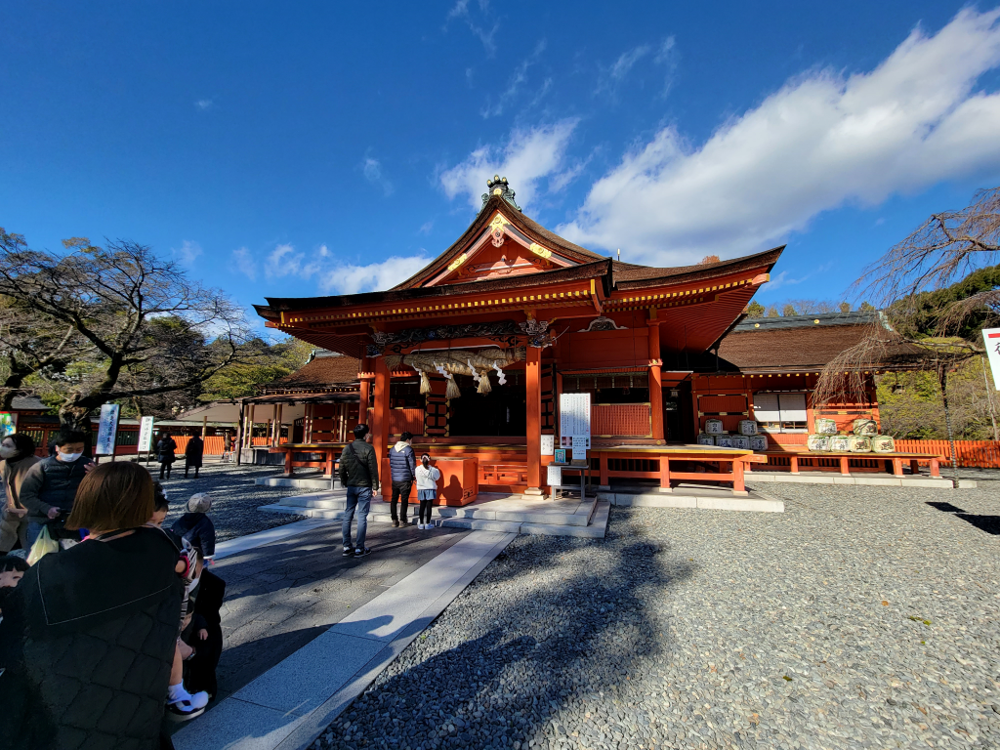
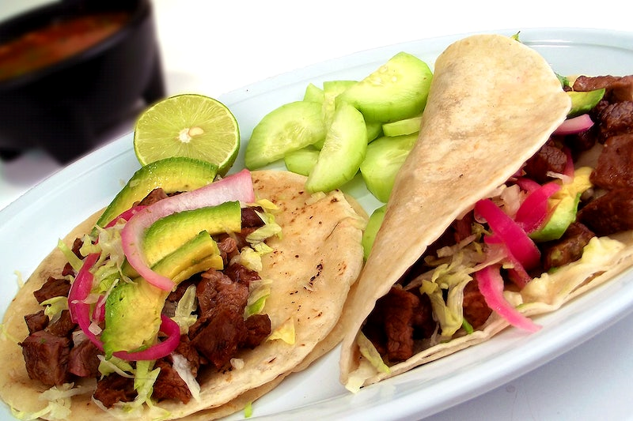
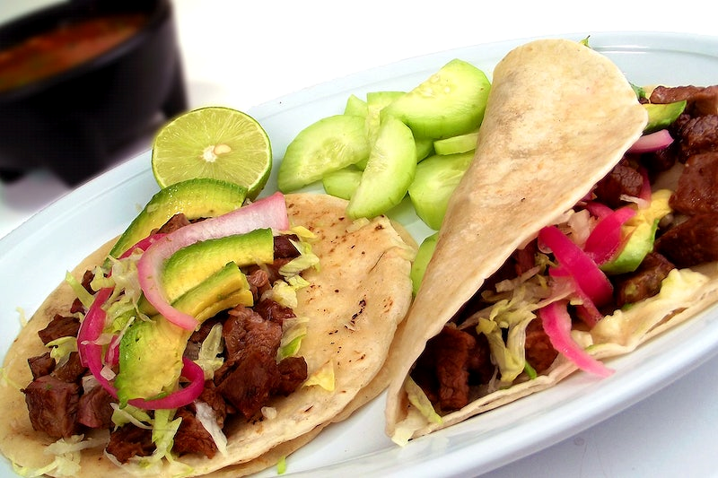

Overview
Purpose
Our aim is not to just take you on a tour. Our aim is for you connect with the history and culture that you visit. Making this a not only once in a lifetime experience.
Audience
Who is this for? Everyone! If you want to try the foods or visit new places this is for you. It does not matter your age what matters is what you want to take home. Wether your are studing or retired, anytime is a great time. Come by yourself or with friends or family!
Branding
Website Logo
Style Guide
Color Palette
Palette URL: https://coolors.co/1e2d2f-fff275-917c78-80c2af| Primary | Secondary | Accent 1 | Accent 2 |
|---|---|---|---|
| [#917C78] | [#FFF275] | [#80C2AF] | [#1E2D2F] |
Typography
Heading Font: [Libre Baskerville]
Paragraph Font: [Merriweather]
Normal paragraph example
Experience something special! Your plans might not be your ordinary holidays with exclusive cultural events. Want to travel and actually know what it is to celebrate Día de los Muertos in Mexico just like you have seen in the movies? Or visit unique historical place like Stonehenge and London with a Full English breakfast like or maybe enjoy a proper Afternoon Tea Set while staying in England and next day visiting Tower of London or Trafalgar Square. Maybe why not Going to Japan? Why not Sensoji Temple in Tokyo While also going to the Sky Tree in Tokyo. There is always an apatite for sushi or ramen! If any of these places sounds like the to-do in your bucket list that you´ve been wanting to do well we are here to make it true
Colored paragraph example
Each trip has a different experience. While there are so many things you want to take the opportunity while being there we are here to help with those plans. You don´t need anything special to apply or even ask for information. If you would like to have a tourist guide and make sure you don´t miss out anything important then we can help with that our if you want to free roam and start your own experience of course we can do that too and we will just provide the information to you of best place to eat or visit while you will also have hotels booked. No need to worry This is the place to make it happen!
Navigation
Site Map
Content
Home page
Experience something special! Your plans might not be your ordinary holidays with exclusive cultural events. Want to travel and actually know what it is to celebrate Día de los Muertos in Mexico just like you have seen in the movies? Or visit unique historical place like Stonehenge and London with a Full English breakfast like or maybe enjoy a proper Afternoon Tea Set while staying in England and next day visiting Tower of London or Trafalgar Square. Maybe why not Going to Japan? Why not Sensoji Temple in Tokyo While also going to the Sky Tree in Tokyo. There is always an apatite for sushi or ramen! If any of these places sounds like the to-do in your bucket list that you´ve been wanting to do well we are here to make it true Each trip has a different experience. While there are so many things you want to take the opportunity while being there, we are here to help with those plans. You don´t need anything special to apply or even ask for information. If you would like to have a tourist guide and make sure you don´t miss out anything important then we can help with that our if you want to free roam and start your own experience of course we can do that too and we will just provide the information to you of best place to eat or visit while you will also have hotels booked. No need to worry This is the place to make it happen!
Images for the Home page

Visit Japan
Japan is one of the most unique places in the world for holding most of it´s traditions… But, what traditions exactly? Well, why don’t we take a look at the reasons we should visit this coming trip. Japan has so may outstanding sites. Why not visit the castles for example? There use to dwell many important people like samurais and even the Emperor himself. There has been so much change in Japan that if you decide to visit Kyoto and Tokyo (no they are not the same place) You can experience the change that has been going on over the years. Houses more then 400yrs old and of course you can´t ever let behind the food and the people themselves that make this all a very special journey. If you want to experience special events like Hanami (Cherry Blossom Festival) then we will give you the best timing to see the beautiful sceneries in March and May Why not visit the Nachi Ougi Matsuri (Nachi Fire Festival). Its not as common as most festival. Hence the stone staircase leads to Nachi Waterfall with a beautiful surrounding. It is said that Nachi Ougi Matsuri is a Shinto ritual where 12 portable shrines representing 12 divine spirits of the waterfall are purified by flaming torches. This must be spectacular to see in first hand and we will take you there without a doubt.
Images for the Page 2


Visit Mexico
Mexico is noticeably different for its places, food and people. Speaking of place with us we will take you not to the common places but beautiful scenery where you can see unique ruins and also try the special foods in that area. We are not only going take you to ruins but to special waterfalls that normally you would need to know of someone who can make there way there. But of course, you will have nothing to worry about since we will always provide you with a place to stay as well as a tourist guide or all the necessary information for you to fully enjoy your stay in the most exclusive and exotic places Mexico has to offer. Dia de Los Muertos is so big and special that even the movie Mama Coco came out. We will take you there specially on Dia De Los Muertos. We want you to have a trip were you can connect with the culture have special foods that are only in those days. Without a doubt we will make sure each holiday is unforgettable. Please take a look around here and ask us for our accessible deals and we will make sure you take that trip you have always wanted.
Images for the Page 3

 

Wireframes
Create three wireframes for your site. One for each page and list them here
Home
[Any additional details about home that the wireframe does not make clear]
[Page 2]
[Any additional details about page 2 that the wireframe does not make clear]
[Page 3]
[Any additional details about page 3 that the wireframe does not make clear]